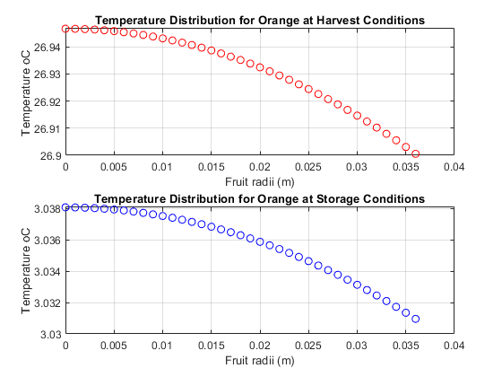

Biological and Agricultural Engineering Department
Modeling and Analysis of Physical and Biological Processes: EBS 270 Homework No. 1 - Due Date: April 26, 2019 Student: Kaiyan Li
Contents
close all; clear all; clc;
Problem 1 a
%Performed in hand writing
Problem 1 b
%Constants of the problem T_Harvest = 26.7; % Ambiente Temperature at Harvest, (oC) T_Storage = 3; % Storage temperature (oC) rho = 998; % Density of orange (km/m3) cp = 3900; % Specific heat of orange (J/kg/oC) a = 0.036; % Radius of fruit (m) a0 = 4.71; a1 = 3.55; %A = a0 + a1*T; % Heat production due to respiration (J/(s-m3)) k = 0.47; % Thermal Conductivity of the fruit (W/m/oC) h = 6; % Convective heat transfer coefficient at the fruit surface (W/m2/oC) w = sqrt(a1/k); he = h-k/a; dr = 0.001; %Random value adopted by student %-------------------------------------------------------------------------- % Harvesting condiions T_Inf = T_Harvest; alpha = -(a0 + a1*T_Inf)/a1; A = -(alpha*(k+he*a))/(he*sin(w*a)+k*w*cos(w*a)); j = 1; for r=0:dr:a if r == 0 T_H(j) = A*w-((a0+a1*T_Inf)/a1)+T_Inf; else u_H(j) = A*sin(w*r)+alpha*r; T_H(j) = u_H(j)/r+T_Inf; end j = j+1; end %-------------------------------------------------------------------------- % Storage conditions T_Inf = T_Storage; alpha = -(a0 + a1*T_Inf)/a1; A = (-alpha*(k+he*a))/(he*sin(w*a)+k*w*cos(w*a)); j = 1; for r=0:dr:a if r == 0 T_S(j) = A*w-((a0+a1*T_Inf)/a1)+T_Inf; else u_S(j) = A*sin(w*r)+alpha*r; T_S(j) = u_S(j)/r+T_Inf; end j = j+1; end %------------------------------------------------------------------------- %PLOTS g = 0:dr:a; subplot(2,1,1) plot(g,T_H,'ro'); title('Temperature Distribution for Orange at Harvest Conditions'); xlabel('Fruit radii (m)');ylabel('Temperature oC'); grid subplot(2,1,2) plot(g,T_S,'bo'); title('Temperature Distribution for Orange at Storage Conditions'); xlabel('Fruit radii (m)');ylabel('Temperature oC'); grid
Problem 1 c
%The heat that needs to be removed is the heat generated by respiration of %the fruit. However, the total heat is the same heat that scapes the fruit %through its surface (convection heat transfer). Therefore we can apply the %following equation: %Q [J/s] = h [W/m2-oC] * Area [m2] * dT [oC]; Where dT is the actual %temperature of the fruit minus the storage temperature. T_Inf = T_Storage; area = 4*pi*a^2; r = a; u = A*sin(w*r)+alpha*r; T = u/r+T_Inf; Q = h*area*(T-T_Inf);